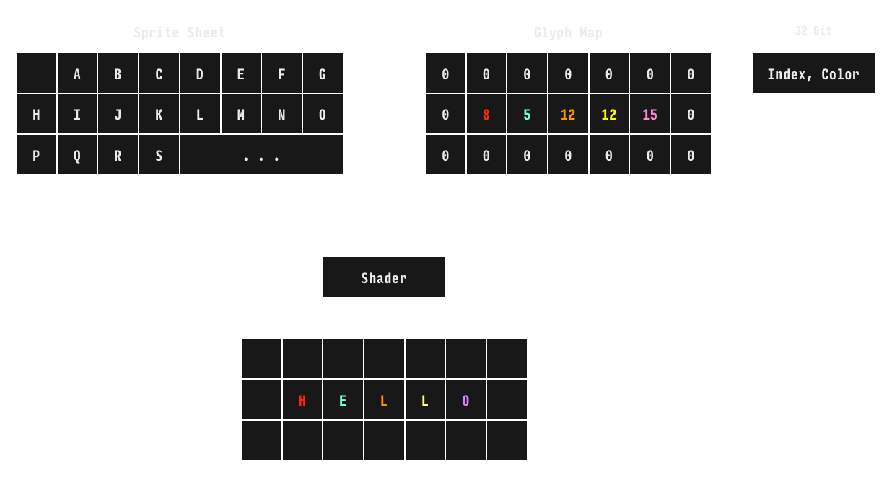

Screen.js is a very simple and lightweight text rendering library. Rendering text with varying font styles and colors is very expensive using current Web APIs. One common approach is to use CSS/HTML to layout spans of text. This is highly inefficent because it causes reflows and style computations. Another popular approach is to use the Canvas text rendering APIs. This is a lot faster but it still has performance problems, especially when changing font styles and colors.
Screen.js uses hardware acceleration to render all text in a single WebGL draw call. It uses neat tile-based rendering technique I came across recently. The basic idea is to use two textures: a standard sprite-sheet texture of text glyphs and a specially crafted glyph map texture. The glyph map texture is very tiny, its width and height are equal to the number of columns and rows. Each texel encodes the (x, y) coordinates of a glyph in the sprite-sheet along with some color information. On every draw call, a new glyph map is uploaded to the GPU and a then fragment shader combines the two textures to render the screen.
Screen.js gives you direct access to the underlying glyph map buffer.
The Screen constructor creates a screen that stretches to fit the specified container HTMLElement.
var b = Screen(elContainer, 10); // Screen(container: HTMLElement, fontSize: number = 10);
Screen.js provides stateful low-level API. At any point you can read and modify these state variables.
s.x; // Current X cursor position. s.y; // Current Y cursor position. s.w; // Number of columns. (read-only) s.h; // Number of rows. (read-only) s.color; // Current font color. s.backgroundColor; // Current background color. s.style; // Current font style.
To write a sequence of characters at position (5, 5) you can use the |writeCharCode| function:
s.moveTo(5, 5);
s.writeCharCode("H".charCodeAt(0)); // Write "H" at the current (x, y) position and advance to (x + 1, y).
s.writeCharCode("e".charCodeAt(0));
s.writeCharCode("l".charCodeAt(0));
s.writeCharCode("l".charCodeAt(0));
s.writeCharCode("o".charCodeAt(0));
The |writeString| convenience function lets you do exactly the same thing.
s.moveTo(10, 10);
s.writeString("Hello");
To change colors and styles modify the state variables beween calls to |writeCharCode|:
s.moveTo(1, 1);
s.writeCharCode("H".charCodeAt(0));
s.color = 0xF00D;
s.writeCharCode("e".charCodeAt(0));
s.style = 2;
s.writeCharCode("l".charCodeAt(0));
s.color = 0xAEAD;
s.writeCharCode("l".charCodeAt(0));
s.style = 1;
s.writeCharCode("o".charCodeAt(0));
Screen.js encodes both the glyph index and the color with a 32-bit word. We reserve 16-bits for the glyph index and 16-bits for the color. To create 16-bit colors you can use the |makeColor| utility function which converts an (r, g, b) pair to a 16-bit (565) color.
You can gain direct access to the screen buffer. However, if you modify the buffer you'll need to make sure to call the |invalidate| function to trigger a repaint event.
var b = s.screenBuffer; // Uint8Array
for (var i = 0; i < b.length;) {
b[i++] = Math.random() * 8; // Glyph x position.
b[i++] = Math.random() * 8; // Glyph y position.
b[i++] = Math.random() * 255; // Glyph color.
b[i++] = Math.random() * 255; // ...
}
s.invalidate(); // Render screen.
If you've gotten thus far you may be wondering, what's this thing really good for? The original motivation for this library was to create an efficient text tracing framework. One that that didn't interfere with the application being traced. Browser debugging consoles are supposed to be built for this but in practice they are extremely inefficeint.
On its own, a screen is only useful as rendering backend for a text editor or some kind of visualization tool. Screen.js provides several helper classes to help you manage text buffers and views on those buffers.
Text buffers hold variable-length lines of formatted text.
var b = new Buffer(32); // Creates an empty buffer with a 32 character maximum line length.
for (var i = 0; i < 100; i++) {
var k = Math.random() * 32;
for (var j = 0; j < k; j++) {
b.color = makeColor(Math.random() * 256 | 0, Math.random() * 256 | 0, Math.random() * 256 | 0);
b.writeString("X");
}
b.newLine(); // Start a new line.
}
Now that we've filled a buffer, we'll need to display it using the |writeBuffer| function. This copies a rectangular region of the buffer to the screen at its current (x, y) position.
s.writeBuffer(b); // Copy the buffer to the screen.
We could also copy subregions of the buffer to the screen.
s.moveTo(40, 2); // Copy a 4 x 10 text region from the buffer at position (3, 3) to the screen at position (32, 2); s.writeBuffer(b, 3, 3, 4, 10);
If we always copy the last part of the buffer to the screen, we're effectively scrolling to the bottom of the buffer:
var b = new Buffer();
setInterval(function () {
var k = Math.random() * 32;
b.color = makeColor(Math.random() * 256 | 0, Math.random() * 256 | 0, Math.random() * 256 | 0);
for (var j = 0; j < k; j++) {
b.writeString("X");
}
b.newLine(); // Start a new line.
s.clear();
s.writeBuffer(b, 0, b.h - s.h); // Copy the bottom of the buffer.
}, 1);
The Screen.js Console class implements the Browser's Console API and writes its output into a buffer:
var b = new Buffer();
var c = new Console(b); // Create a Console that writes its output into a buffer.
setInterval(function () {
c.group('A');
c.log(123);
c.log("Testing", {a: i++, x: new Int32Array(Math.random() * 16 | 0), c: [2, 3, 4], b: {"THIS\nBAD": {a: 1, b: {a: {a: [2, 3, 4], b: {a: {a: 1, b: {a: 1}, c: [2,2,3,3]}}}}}}});
c.log([1, 2, 3]);
c.group();
c.log(123);
c.log(123);
c.warn("HELLO");
c.error("HELLO WORLD");
c.log([,,,new Int32Array(Math.random() * 8),,,,new Int32Array(Math.random() * 10)]);
c.log(new Int32Array(64));
c.time("AAA");
c.log(123);
c.timeEnd("AAA");
c.log(123);
c.groupEnd();
c.groupEnd();
s.clear();
s.writeBuffer(b, 0, b.h - s.h); // Copy the bottom of the buffer.
}, 1);